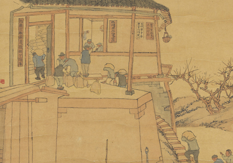

杭县农民争交农业税

由新民主主义社会向社会主义社会过渡的主要任务是完成对农业、手工业、资本主义工商业的社会主义改造，建立社会主义工业化。潘天寿的《杭县农民争交农业税》，用朴素的线描淡彩勾勒出新中国成立以来，广大农民群众一心向着党，践行党的号召。
由新民主主义社会向社会主义社会过渡的主要任务是完成对农业、手工业、资本主义工商业的社会主义改造，建立社会主义工业化。潘天寿的《杭县农民争交农业税》，用朴素的线描淡彩勾勒出新中国成立以来，广大农民群众一心向着党，践行党的号召。